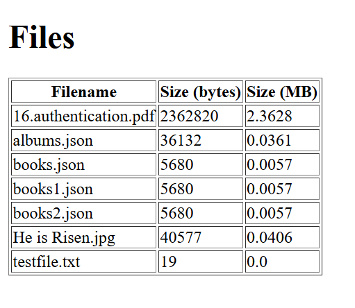
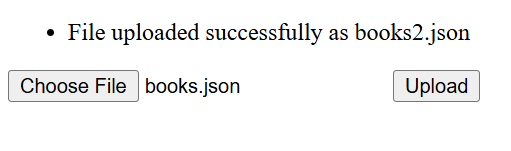
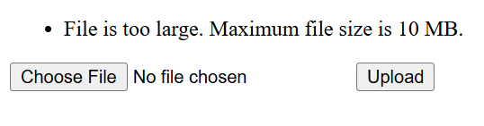
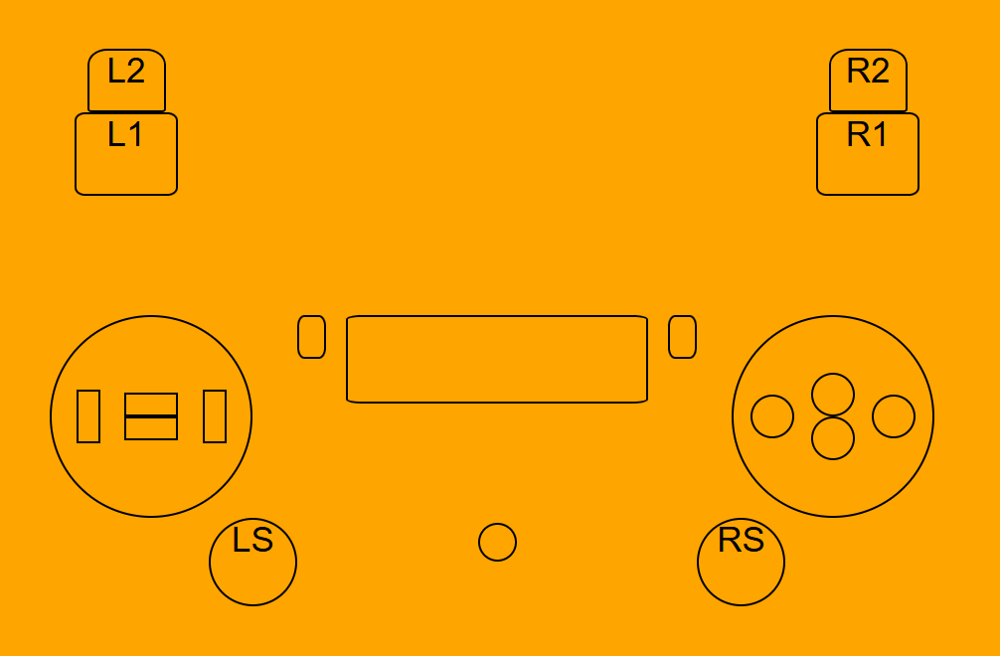

A simple system checking application written in C#
So the first smaller project for this year is written in C#. What you can do with this project is to list all
your harddrives togheter with their sizes in GB and free space available in GB. You are also able to list eventual
network devices.
I have been stumbling upon LibreHardwareMonitor which is a library that easlity let's you retrieve the
temperature of your GPU and CPU. Unfortunately I am not able (yet) to check the temperature of my processor's cores. The
GPU temp of my nvidia card shows without any problems.
I will keep updating this project as I loved returning to C# for an hour or two and would love to improve.
Here is a link to a .rar file. You will need to download, extract all files and run the .exe. Enjoy!
UPDATE: The program can detect the temperature of (at least) the Intel CPUs. It works for me. You will need to right click on the .exe file and
choose "Run as administrator".
Update in my Flask Python file sharing server project
So after the Chritsmas week, I have decided to keep on working on projects and building my portfolio.
I wanted to work on the Python and Flask project that I have been telling you more about 2 posts ago.
I have managed to add more features to it.
 
I have been working on showing the file sizes of the uploaded files. You can see it in both bytes and in MB, rounded to 4 decimals.
You can also see that I have been added functionality to upload files with the same name as files already on the server.
This is how it can look when you upload a file named books.json. There is a function in the code that scans the whole
content of the folder. If it finds a file with that name, it will append a number at the end of the name. It is a counter
that increases. So book.json became in this image books2.json.

I have added a feature that limits the filesize you can upload to 10MB. You are able to change this file size limit
by changing the number from 10 to whatever you'd like.
I'm more aware of what it can be done with Flask and I will keep improving this project. It it helpful to use it in the home network.
You can check the code and experiment with it on GitHub.
Update in the keyboard app project
So, if you check the main page, you will find a video showcasing a project that I started with and that I decided I could use for users to test their keyboards.
I got the idea to also implement a page that tests your PS4 controller. I got inspired while doing some research and tonight I have been working on the layout and
it's not done but I think I've came a long way and I am proud to share this picture with you guys. Enjoy!

It is plain HTML and CSS!
New project repo on Git Hub
I have managed to create a basic file sharing web app using Python and Flask. I am really excited about Flask! My first time writing
anything with it. This app let's you see the content of a shared folder on a local server, download files, let's you upload files.
There is a limit of max 5 downloads per minute, which you can adjust by just changing a number. Also there is a log file created and
more advanced logging such as ip numbers of visitors, names of files uploaded, downloaded etc.
A first security protection measure added is against path traversal attacks. A path traversal attack (also known as directory traversal)
aims to access files and directories that are stored outside the web root folder.
Source:
OWASP.org.
You only need python installed and install two packages before you can give it a try. Here's a link to
the repo project.
My Unsplash API project is now LIVE on Netlify
I have now managed to publish the Unsplash API project on Netlify. You are able to try it and "feel" it.
For the more technical skilled people reading this, I had to change some of the initial code because I needed to hide my
API key. So the solution was to run some NodeJS magic that would get the key from the environmental variables that Netlify
let's you add somewhere in the priject dashboard. After that I needed to change some of the frontend code to fetch from
the needed endpoints. Of course, there are stuff I can improve.
Random pic on the landing page works every time. The search function works, the pagination works - the issue it would be that
if you for example have tens of pages of pictures returning as results, and you wanna jump within seconds from page 1 to page 7 or 10 or
20 etc, it may take a couple of seconds or you may have to wait a couple of seconds before clicking again on the same page link.
Modal also works for when you click on the pictures. I haven't tried by myself how it works on the phone.
My biggest challenge right now is to learn enough to be able to code a properly control system with the
mouse pointer in video game. I am going to be more specific and say that I need to learn about angles and
use that knowledge to keep pushing my skills in coding videogames. I am going to use ChatGPT to help me get through this.
Come back for more updates!